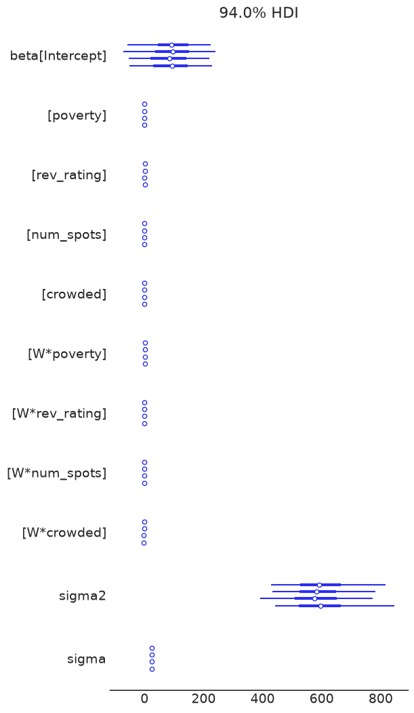
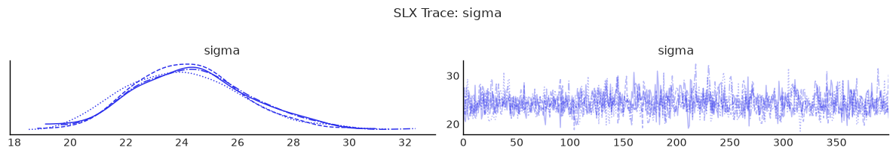
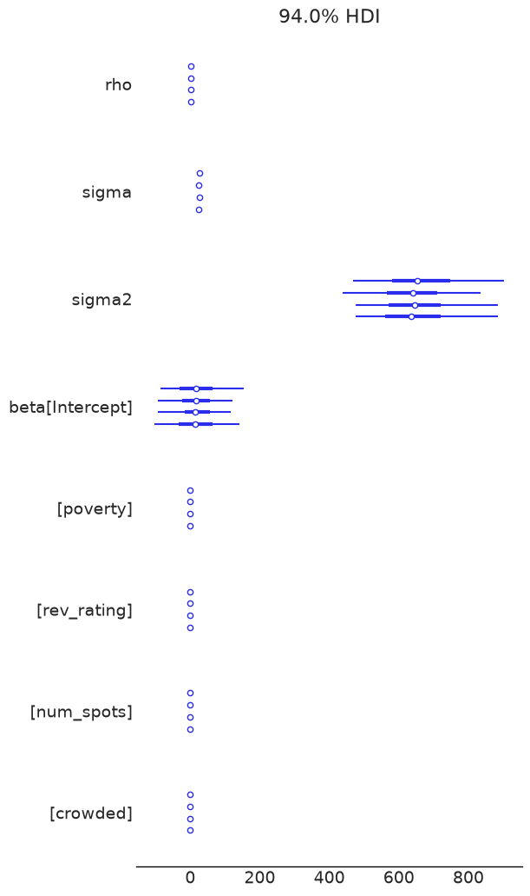
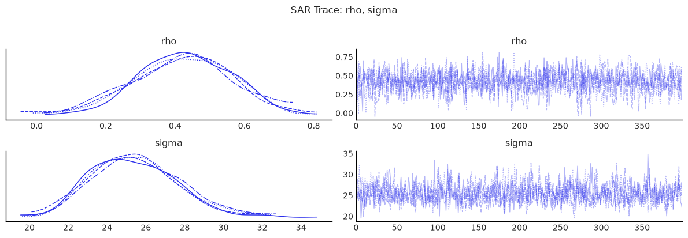
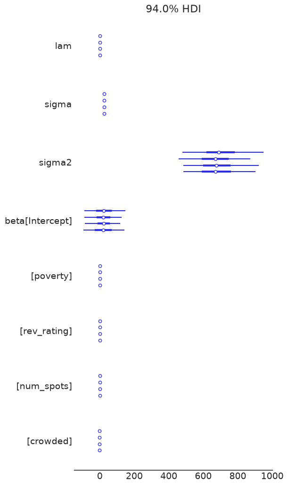
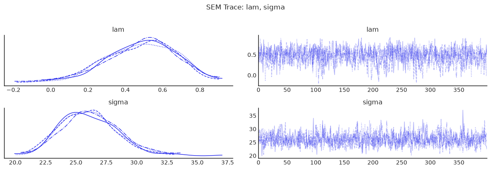
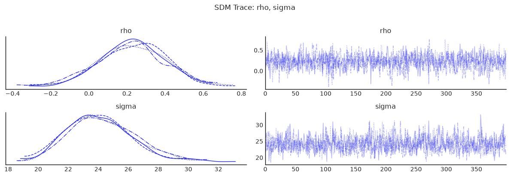
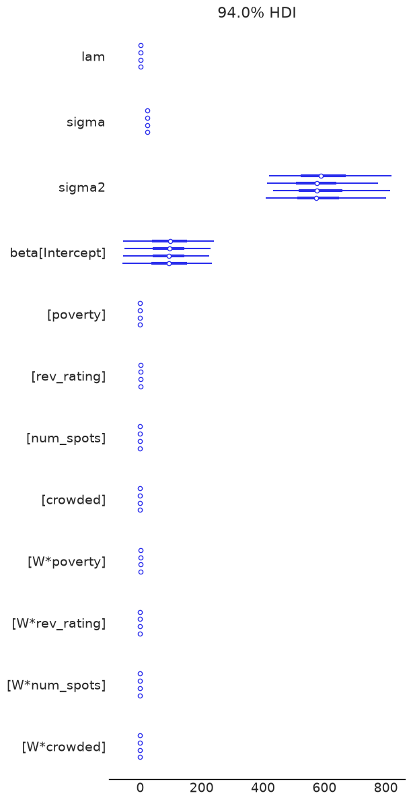
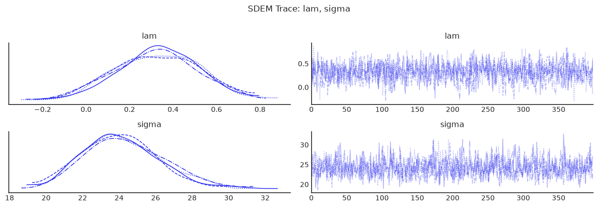

Bayesian Spatial Models: A Pedagogical Walkthrough¶
This notebook demonstrates all five models currently implemented in bayespecon:
SLX
SAR
SEM
SDM
SDEM
Each section explains the model idea, fits the model, and inspects posterior summaries and spatial effects.
Conceptual Roadmap¶
Let \(W\) denote the spatial weights matrix and \(WX\) the spatial lag of covariates.
SLX: \(y = X\beta + WX\theta + \epsilon\)
SAR: \(y = \rho Wy + X\beta + \epsilon\)
SEM: \(y = X\beta + u\), \(u = \lambda Wu + \epsilon\)
SDM: \(y = \rho Wy + X\beta + WX\theta + \epsilon\)
SDEM: \(y = X\beta + WX\theta + u\), \(u = \lambda Wu + \epsilon\)
In bayespecon, all models accept either:
formula mode:
model_class(formula=..., data=..., W=...), ormatrix mode:
model_class(y=..., X=..., W=...).
import arviz as az
import geodatasets
import geopandas as gpd
import matplotlib.pyplot as plt
import pandas as pd
from libpysal.graph import Graph
from bayespecon.diagnostics.bayesfactor import bayes_factor_compare_models
from bayespecon.models import OLS, SAR, SDEM, SDM, SEM, SLX
az.style.use("arviz-white")
/home/runner/micromamba/envs/test/lib/python3.14/site-packages/tqdm/auto.py:21: TqdmWarning: IProgress not found. Please update jupyter and ipywidgets. See https://ipywidgets.readthedocs.io/en/stable/user_install.html
from .autonotebook import tqdm as notebook_tqdm
# Load sample spatial dataset
gdf = gpd.read_file(geodatasets.data.geoda.airbnb.url)
xcols = ["poverty", "rev_rating", "num_spots", "crowded"]
ycol = "price_pp"
gdf = gdf.dropna(subset=xcols + [ycol]).copy()
# Build contiguity graph (queen)
W = Graph.build_contiguity(gdf, rook=False).transform("r")
print(f"Observations: {len(gdf)}")
print(f"Predictors: {xcols}")
Observations: 67
Predictors: ['poverty', 'rev_rating', 'num_spots', 'crowded']
Helper Functions
To keep each model section focused, we use utility functions to:
fit with consistent MCMC settings,
print posterior summaries,
tabulate direct/indirect/total effects.
For a quick pedagogical run, we use small draw counts. Increase these for real inference.
def fit_and_report(model_cls, formula, data, W, draws=400, tune=400, chains=4, seed=42):
"""Fit a spatial model and return (model, summary, effects_df).
Uses minimal MCMC settings for pedagogical demonstration.
Increase draws/tune for real analyses.
"""
model = model_cls(formula=formula, data=data, W=W, logdet_method="eigenvalue")
model.fit(
draws=draws,
tune=tune,
chains=chains,
random_seed=seed,
progressbar=False,
idata_kwargs={"log_likelihood": True},
)
summary = model.summary(round_to=3)
effects_df = pd.DataFrame(model.spatial_effects())
return model, summary, effects_df
Convergence Diagnostics Helper
For each fitted model, we will inspect:
r_hat(target close to 1.00)effective sample sizes (
ess_bulk,ess_tail)trace plots for key parameters.
def diagnostics_table(idata, var_names):
"""Show key MCMC diagnostics for the given parameters."""
cols = ["mean", "sd", "ess_bulk", "ess_tail", "r_hat"]
return az.summary(idata, var_names=var_names, round_to=3)[cols]
def show_trace(idata, var_names, title):
"""Plot trace plots for the given parameters."""
az.plot_trace(idata, var_names=var_names)
plt.suptitle(title, y=1.02)
plt.tight_layout()
plt.show()
Models¶
0) OLS: What could go wrong?¶
Model:
ols = OLS(
formula="price_pp ~ poverty + rev_rating + num_spots + crowded",
data=gdf,
W=W,
)
olsfit = ols.fit(
draws=400,
tune=400,
chains=4,
random_seed=42,
progressbar=False,
idata_kwargs={"log_likelihood": True},
)
Initializing NUTS using jitter+adapt_diag...
Multiprocess sampling (4 chains in 2 jobs)
NUTS: [beta, sigma2]
Sampling 4 chains for 400 tune and 400 draw iterations (1_600 + 1_600 draws total) took 11 seconds.
The rhat statistic is larger than 1.01 for some parameters. This indicates problems during sampling. See https://arxiv.org/abs/1903.08008 for details
ols.summary()
| mean | sd | hdi_3% | hdi_97% | mcse_mean | mcse_sd | ess_bulk | ess_tail | r_hat | |
|---|---|---|---|---|---|---|---|---|---|
| Intercept | 37.538 | 59.681 | -70.310 | 148.802 | 2.356 | 1.852 | 646.0 | 654.0 | 1.00 |
| poverty | 0.206 | 0.340 | -0.443 | 0.798 | 0.010 | 0.010 | 1110.0 | 913.0 | 1.00 |
| rev_rating | 0.354 | 0.631 | -0.849 | 1.511 | 0.025 | 0.020 | 653.0 | 661.0 | 1.00 |
| num_spots | 0.120 | 0.024 | 0.074 | 0.161 | 0.001 | 0.001 | 1199.0 | 987.0 | 1.01 |
| crowded | -2.246 | 0.950 | -4.014 | -0.389 | 0.028 | 0.027 | 1165.0 | 655.0 | 1.01 |
| sigma2 | 757.949 | 141.119 | 503.034 | 1010.699 | 4.496 | 4.391 | 1079.0 | 954.0 | 1.00 |
| sigma | 27.416 | 2.509 | 22.945 | 32.183 | 0.079 | 0.070 | 1079.0 | 954.0 | 1.00 |
1) SLX: Spatially Lagged Covariates Only¶
Model:
Interpretation:
betacaptures local covariate effects.thetacaptures neighbor-covariate spillovers.No spatial lag on \(y\), so no autoregressive propagation through outcomes.
slx, summary_slx, effects_slx = fit_and_report(
SLX,
formula="price_pp ~ poverty + rev_rating + num_spots + crowded",
data=gdf,
W=W,
)
display(summary_slx)
display(effects_slx)
Initializing NUTS using jitter+adapt_diag...
Multiprocess sampling (4 chains in 2 jobs)
NUTS: [beta, sigma2]
Sampling 4 chains for 400 tune and 400 draw iterations (1_600 + 1_600 draws total) took 13 seconds.
| mean | sd | hdi_3% | hdi_97% | mcse_mean | mcse_sd | ess_bulk | ess_tail | r_hat | |
|---|---|---|---|---|---|---|---|---|---|
| Intercept | 90.376 | 79.661 | -57.754 | 230.173 | 2.400 | 1.787 | 1113.402 | 1083.008 | 1.006 |
| poverty | -0.656 | 0.466 | -1.512 | 0.252 | 0.017 | 0.012 | 768.924 | 985.870 | 1.007 |
| rev_rating | 0.573 | 0.745 | -0.713 | 2.006 | 0.021 | 0.018 | 1214.049 | 1146.322 | 1.001 |
| num_spots | 0.021 | 0.032 | -0.040 | 0.079 | 0.001 | 0.001 | 934.564 | 1061.473 | 1.000 |
| crowded | -0.979 | 1.153 | -3.074 | 1.216 | 0.037 | 0.029 | 965.679 | 807.254 | 1.005 |
| W*poverty | 1.330 | 0.621 | 0.024 | 2.382 | 0.020 | 0.016 | 974.841 | 1106.794 | 1.000 |
| W*rev_rating | -0.946 | 0.942 | -2.698 | 0.757 | 0.033 | 0.023 | 837.128 | 1003.666 | 1.003 |
| W*num_spots | 0.195 | 0.047 | 0.104 | 0.279 | 0.002 | 0.001 | 889.528 | 1101.647 | 1.003 |
| W*crowded | -1.724 | 1.641 | -4.635 | 1.402 | 0.056 | 0.042 | 847.591 | 886.211 | 1.003 |
| sigma2 | 596.478 | 104.846 | 413.217 | 799.885 | 3.047 | 2.688 | 1202.613 | 989.284 | 1.002 |
| sigma | 24.331 | 2.115 | 20.677 | 28.604 | 0.061 | 0.051 | 1202.613 | 989.284 | 1.002 |
| direct | direct_ci_lower | direct_ci_upper | direct_pvalue | indirect | indirect_ci_lower | indirect_ci_upper | indirect_pvalue | total | total_ci_lower | total_ci_upper | total_pvalue | |
|---|---|---|---|---|---|---|---|---|---|---|---|---|
| variable | ||||||||||||
| poverty | -0.655745 | -1.599576 | 0.252297 | 0.1625 | 1.330340 | 0.116769 | 2.597950 | 0.02875 | 0.674595 | -0.159572 | 1.460826 | 0.11125 |
| rev_rating | 0.572918 | -0.893368 | 1.990261 | 0.4600 | -0.946491 | -2.700358 | 0.925888 | 0.32375 | -0.373573 | -1.904161 | 1.238937 | 0.64375 |
| num_spots | 0.021133 | -0.042472 | 0.082185 | 0.5075 | 0.195008 | 0.102232 | 0.285897 | 0.00000 | 0.216141 | 0.151425 | 0.277017 | 0.00000 |
| crowded | -0.979114 | -3.261508 | 1.283365 | 0.4025 | -1.724342 | -5.141054 | 1.394220 | 0.29250 | -2.703456 | -5.164128 | -0.244072 | 0.03500 |
az.plot_forest(slx.inference_data)
display(diagnostics_table(slx.inference_data, ["beta", "sigma"]))
show_trace(slx.inference_data, ["sigma"], "SLX Trace: sigma")
| mean | sd | ess_bulk | ess_tail | r_hat | |
|---|---|---|---|---|---|
| beta[Intercept] | 90.376 | 79.661 | 1113.402 | 1083.008 | 1.006 |
| beta[poverty] | -0.656 | 0.466 | 768.924 | 985.870 | 1.007 |
| beta[rev_rating] | 0.573 | 0.745 | 1214.049 | 1146.322 | 1.001 |
| beta[num_spots] | 0.021 | 0.032 | 934.564 | 1061.473 | 1.000 |
| beta[crowded] | -0.979 | 1.153 | 965.679 | 807.254 | 1.005 |
| beta[W*poverty] | 1.330 | 0.621 | 974.841 | 1106.794 | 1.000 |
| beta[W*rev_rating] | -0.946 | 0.942 | 837.128 | 1003.666 | 1.003 |
| beta[W*num_spots] | 0.195 | 0.047 | 889.528 | 1101.647 | 1.003 |
| beta[W*crowded] | -1.724 | 1.641 | 847.591 | 886.211 | 1.003 |
| sigma | 24.331 | 2.115 | 1202.613 | 989.284 | 1.002 |
/tmp/ipykernel_8663/3581438262.py:11: UserWarning: The figure layout has changed to tight
plt.tight_layout()


2) SAR: Spatial Lag of Outcome¶
Model:
Interpretation:
\(\rho\) controls feedback from neighboring outcomes.
Effects are amplified through \((I - \rho W)^{-1}\), so direct and indirect impacts differ from raw \(\beta\).
sar, summary_sar, effects_sar = fit_and_report(
SAR,
formula="price_pp ~ poverty + rev_rating + num_spots + crowded",
data=gdf,
W=W,
)
summary_sar
| mean | sd | hdi_3% | hdi_97% | mcse_mean | mcse_sd | ess_bulk | ess_tail | r_hat | |
|---|---|---|---|---|---|---|---|---|---|
| rho | 0.422 | 0.144 | 0.149 | 0.684 | 0.004 | 0.004 | 1576.640 | 1171.706 | 1.004 |
| sigma | 25.477 | 2.267 | 21.609 | 29.876 | 0.061 | 0.042 | 1408.853 | 1572.150 | 1.001 |
| sigma2 | 654.220 | 118.013 | 460.927 | 885.747 | 3.172 | 2.440 | 1408.853 | 1572.150 | 1.001 |
| Intercept | 16.616 | 62.856 | -93.749 | 141.525 | 1.616 | 1.143 | 1516.738 | 1572.956 | 1.006 |
| poverty | 0.021 | 0.318 | -0.638 | 0.575 | 0.008 | 0.006 | 1486.348 | 1598.024 | 1.002 |
| rev_rating | 0.287 | 0.665 | -1.065 | 1.417 | 0.017 | 0.012 | 1535.791 | 1494.259 | 1.005 |
| num_spots | 0.081 | 0.027 | 0.035 | 0.136 | 0.001 | 0.001 | 1520.451 | 1406.417 | 1.000 |
| crowded | -1.661 | 0.883 | -3.307 | -0.048 | 0.022 | 0.016 | 1597.208 | 1532.542 | 0.999 |
effects_sar
| direct | direct_ci_lower | direct_ci_upper | direct_pvalue | indirect | indirect_ci_lower | indirect_ci_upper | indirect_pvalue | total | total_ci_lower | total_ci_upper | total_pvalue | |
|---|---|---|---|---|---|---|---|---|---|---|---|---|
| variable | ||||||||||||
| poverty | 0.022171 | -0.676299 | 0.684704 | 0.93250 | 0.011560 | -0.650486 | 0.645173 | 0.93500 | 0.033731 | -1.284770 | 1.244409 | 0.93250 |
| rev_rating | 0.304490 | -1.097942 | 1.620972 | 0.66625 | 0.228810 | -0.931892 | 1.711077 | 0.66375 | 0.533300 | -1.914713 | 3.188163 | 0.66625 |
| num_spots | 0.085960 | 0.029453 | 0.144807 | 0.00125 | 0.064400 | 0.007677 | 0.185612 | 0.00875 | 0.150361 | 0.044835 | 0.318878 | 0.00125 |
| crowded | -1.759797 | -3.701141 | 0.067303 | 0.05875 | -1.310093 | -4.249022 | 0.047483 | 0.06375 | -3.069891 | -7.594534 | 0.099088 | 0.05875 |
az.plot_forest(sar.inference_data)
display(diagnostics_table(sar.inference_data, ["rho", "beta", "sigma"]))
show_trace(sar.inference_data, ["rho", "sigma"], "SAR Trace: rho, sigma")
| mean | sd | ess_bulk | ess_tail | r_hat | |
|---|---|---|---|---|---|
| rho | 0.422 | 0.144 | 1576.640 | 1171.706 | 1.004 |
| beta[Intercept] | 16.616 | 62.856 | 1516.738 | 1572.956 | 1.006 |
| beta[poverty] | 0.021 | 0.318 | 1486.348 | 1598.024 | 1.002 |
| beta[rev_rating] | 0.287 | 0.665 | 1535.791 | 1494.259 | 1.005 |
| beta[num_spots] | 0.081 | 0.027 | 1520.451 | 1406.417 | 1.000 |
| beta[crowded] | -1.661 | 0.883 | 1597.208 | 1532.542 | 0.999 |
| sigma | 25.477 | 2.267 | 1408.853 | 1572.150 | 1.001 |
/tmp/ipykernel_8663/3581438262.py:11: UserWarning: The figure layout has changed to tight
plt.tight_layout()


3) SEM: Spatial Correlation in Errors¶
Model:
Interpretation:
Spatial dependence is moved to latent shocks rather than outcome feedback.
Useful when omitted spatial factors induce correlated residuals.
sem, summary_sem, effects_sem = fit_and_report(
SEM,
formula="price_pp ~ poverty + rev_rating + num_spots + crowded",
data=gdf,
W=W,
)
display(summary_sem)
display(effects_sem)
| mean | sd | hdi_3% | hdi_97% | mcse_mean | mcse_sd | ess_bulk | ess_tail | r_hat | |
|---|---|---|---|---|---|---|---|---|---|
| lam | 0.481 | 0.192 | 0.105 | 0.808 | 0.005 | 0.005 | 1403.685 | 1124.536 | 1.001 |
| sigma | 26.119 | 2.326 | 21.838 | 30.371 | 0.062 | 0.045 | 1419.489 | 1495.525 | 1.001 |
| sigma2 | 687.607 | 124.059 | 474.112 | 918.974 | 3.333 | 2.709 | 1419.489 | 1495.525 | 1.001 |
| Intercept | 21.628 | 61.712 | -89.442 | 137.261 | 1.607 | 1.135 | 1472.460 | 1509.541 | 1.006 |
| poverty | -0.172 | 0.448 | -1.083 | 0.611 | 0.012 | 0.008 | 1385.606 | 1522.586 | 0.999 |
| rev_rating | 0.608 | 0.658 | -0.656 | 1.808 | 0.017 | 0.012 | 1543.749 | 1571.575 | 1.004 |
| num_spots | 0.075 | 0.037 | 0.004 | 0.143 | 0.001 | 0.001 | 1416.094 | 1330.947 | 1.001 |
| crowded | -1.758 | 1.133 | -3.861 | 0.372 | 0.029 | 0.020 | 1581.493 | 1614.186 | 0.999 |
| direct | direct_ci_lower | direct_ci_upper | direct_pvalue | indirect | indirect_ci_lower | indirect_ci_upper | indirect_pvalue | total | total_ci_lower | total_ci_upper | total_pvalue | |
|---|---|---|---|---|---|---|---|---|---|---|---|---|
| variable | ||||||||||||
| poverty | -0.172250 | -1.109482 | 0.671097 | 0.74375 | 0.0 | 0.0 | 0.0 | 0.0 | -0.172250 | -1.109482 | 0.671097 | 0.74375 |
| rev_rating | 0.607912 | -0.725965 | 1.844555 | 0.36125 | 0.0 | 0.0 | 0.0 | 0.0 | 0.607912 | -0.725965 | 1.844555 | 0.36125 |
| num_spots | 0.075376 | -0.000262 | 0.142790 | 0.05250 | 0.0 | 0.0 | 0.0 | 0.0 | 0.075376 | -0.000262 | 0.142790 | 0.05250 |
| crowded | -1.758480 | -3.932558 | 0.474824 | 0.13625 | 0.0 | 0.0 | 0.0 | 0.0 | -1.758480 | -3.932558 | 0.474824 | 0.13625 |
az.plot_forest(sem.inference_data)
display(diagnostics_table(sem.inference_data, ["lam", "beta", "sigma"]))
show_trace(sem.inference_data, ["lam", "sigma"], "SEM Trace: lam, sigma")
| mean | sd | ess_bulk | ess_tail | r_hat | |
|---|---|---|---|---|---|
| lam | 0.481 | 0.192 | 1403.685 | 1124.536 | 1.001 |
| beta[Intercept] | 21.628 | 61.712 | 1472.460 | 1509.541 | 1.006 |
| beta[poverty] | -0.172 | 0.448 | 1385.606 | 1522.586 | 0.999 |
| beta[rev_rating] | 0.608 | 0.658 | 1543.749 | 1571.575 | 1.004 |
| beta[num_spots] | 0.075 | 0.037 | 1416.094 | 1330.947 | 1.001 |
| beta[crowded] | -1.758 | 1.133 | 1581.493 | 1614.186 | 0.999 |
| sigma | 26.119 | 2.326 | 1419.489 | 1495.525 | 1.001 |
/tmp/ipykernel_8663/3581438262.py:11: UserWarning: The figure layout has changed to tight
plt.tight_layout()


4) SDM: SAR + SLX¶
Model:
Interpretation:
Includes both outcome feedback and neighbor-covariate channels.
Often used as a flexible nesting model for SAR/SLX.
sdm, summary_sdm, effects_sdm = fit_and_report(
SDM,
formula="price_pp ~ poverty + rev_rating + num_spots + crowded",
data=gdf,
W=W,
)
display(summary_sdm)
display(effects_sdm)
| mean | sd | hdi_3% | hdi_97% | mcse_mean | mcse_sd | ess_bulk | ess_tail | r_hat | |
|---|---|---|---|---|---|---|---|---|---|
| rho | 0.227 | 0.173 | -0.108 | 0.527 | 0.004 | 0.004 | 1562.603 | 1129.672 | 1.004 |
| sigma | 24.160 | 2.191 | 20.237 | 28.304 | 0.061 | 0.042 | 1314.037 | 1494.765 | 1.002 |
| sigma2 | 588.520 | 108.243 | 409.528 | 801.097 | 3.015 | 2.313 | 1314.037 | 1494.765 | 1.002 |
| Intercept | 92.078 | 79.507 | -57.104 | 230.238 | 2.051 | 1.503 | 1508.459 | 1571.699 | 1.002 |
| poverty | -0.634 | 0.460 | -1.502 | 0.225 | 0.012 | 0.009 | 1555.316 | 1645.554 | 1.000 |
| rev_rating | 0.669 | 0.796 | -0.831 | 2.117 | 0.020 | 0.014 | 1656.656 | 1495.069 | 1.002 |
| num_spots | 0.017 | 0.032 | -0.047 | 0.075 | 0.001 | 0.001 | 1633.774 | 1531.708 | 1.001 |
| crowded | -0.964 | 1.168 | -3.187 | 1.158 | 0.030 | 0.019 | 1527.782 | 1422.306 | 1.002 |
| W*poverty | 1.147 | 0.629 | -0.042 | 2.328 | 0.016 | 0.012 | 1449.314 | 1457.627 | 1.000 |
| W*rev_rating | -1.207 | 1.002 | -3.083 | 0.715 | 0.025 | 0.019 | 1552.552 | 1612.779 | 0.999 |
| W*num_spots | 0.164 | 0.052 | 0.064 | 0.256 | 0.001 | 0.001 | 1478.363 | 1563.848 | 1.000 |
| W*crowded | -1.186 | 1.707 | -4.374 | 2.017 | 0.042 | 0.030 | 1660.226 | 1374.307 | 1.000 |
| direct | direct_ci_lower | direct_ci_upper | direct_pvalue | indirect | indirect_ci_lower | indirect_ci_upper | indirect_pvalue | total | total_ci_lower | total_ci_upper | total_pvalue | |
|---|---|---|---|---|---|---|---|---|---|---|---|---|
| variable | ||||||||||||
| poverty | -0.579319 | -1.451372 | 0.291145 | 0.18750 | 1.280330 | -0.142865 | 2.862272 | 0.07750 | 0.701011 | -0.439621 | 2.062179 | 0.22000 |
| rev_rating | 0.612573 | -0.980098 | 2.148496 | 0.43250 | -1.344695 | -3.810544 | 1.047537 | 0.25375 | -0.732122 | -3.230660 | 1.639907 | 0.53750 |
| num_spots | 0.027489 | -0.033780 | 0.093959 | 0.41125 | 0.220780 | 0.087457 | 0.413964 | 0.00000 | 0.248269 | 0.121770 | 0.463515 | 0.00000 |
| crowded | -1.057405 | -3.261047 | 1.140889 | 0.35250 | -1.891468 | -6.647216 | 2.056996 | 0.36250 | -2.948873 | -7.606219 | 0.376668 | 0.07875 |
az.plot_forest(sdm.inference_data)
display(diagnostics_table(sdm.inference_data, ["rho", "beta", "sigma"]))
show_trace(sdm.inference_data, ["rho", "sigma"], "SDM Trace: rho, sigma")
| mean | sd | ess_bulk | ess_tail | r_hat | |
|---|---|---|---|---|---|
| rho | 0.227 | 0.173 | 1562.603 | 1129.672 | 1.004 |
| beta[Intercept] | 92.078 | 79.507 | 1508.459 | 1571.699 | 1.002 |
| beta[poverty] | -0.634 | 0.460 | 1555.316 | 1645.554 | 1.000 |
| beta[rev_rating] | 0.669 | 0.796 | 1656.656 | 1495.069 | 1.002 |
| beta[num_spots] | 0.017 | 0.032 | 1633.774 | 1531.708 | 1.001 |
| beta[crowded] | -0.964 | 1.168 | 1527.782 | 1422.306 | 1.002 |
| beta[W*poverty] | 1.147 | 0.629 | 1449.314 | 1457.627 | 1.000 |
| beta[W*rev_rating] | -1.207 | 1.002 | 1552.552 | 1612.779 | 0.999 |
| beta[W*num_spots] | 0.164 | 0.052 | 1478.363 | 1563.848 | 1.000 |
| beta[W*crowded] | -1.186 | 1.707 | 1660.226 | 1374.307 | 1.000 |
| sigma | 24.160 | 2.191 | 1314.037 | 1494.765 | 1.002 |
/tmp/ipykernel_8663/3581438262.py:11: UserWarning: The figure layout has changed to tight
plt.tight_layout()

5) SDEM: SLX + Spatial Error¶
Model:
Interpretation:
Neighbor covariates matter directly (through \(WX\)),
and unmodeled shocks are spatially correlated (through \(u\)).
sdem, summary_sdem, effects_sdem = fit_and_report(
SDEM,
formula="price_pp ~ poverty + rev_rating + num_spots + crowded",
data=gdf,
W=W,
)
display(summary_sdem)
display(effects_sdem)
| mean | sd | hdi_3% | hdi_97% | mcse_mean | mcse_sd | ess_bulk | ess_tail | r_hat | |
|---|---|---|---|---|---|---|---|---|---|
| lam | 0.326 | 0.195 | -0.030 | 0.689 | 0.005 | 0.005 | 1509.366 | 1250.542 | 1.006 |
| sigma | 24.214 | 2.178 | 20.346 | 28.368 | 0.061 | 0.041 | 1311.814 | 1495.677 | 1.001 |
| sigma2 | 591.065 | 107.800 | 413.945 | 804.767 | 3.003 | 2.273 | 1311.814 | 1495.677 | 1.001 |
| Intercept | 93.028 | 80.436 | -59.448 | 228.372 | 2.130 | 1.514 | 1423.504 | 1574.803 | 1.002 |
| poverty | -0.559 | 0.440 | -1.427 | 0.241 | 0.011 | 0.009 | 1571.768 | 1555.849 | 1.000 |
| rev_rating | 0.741 | 0.726 | -0.717 | 2.007 | 0.018 | 0.014 | 1699.005 | 1493.754 | 1.002 |
| num_spots | 0.029 | 0.031 | -0.029 | 0.087 | 0.001 | 0.001 | 1562.429 | 1483.280 | 1.000 |
| crowded | -1.020 | 1.128 | -3.131 | 1.053 | 0.028 | 0.019 | 1566.354 | 1686.229 | 0.999 |
| W*poverty | 1.118 | 0.675 | -0.211 | 2.293 | 0.018 | 0.013 | 1419.938 | 1443.397 | 1.000 |
| W*rev_rating | -1.110 | 0.902 | -2.805 | 0.563 | 0.023 | 0.017 | 1547.178 | 1602.973 | 1.000 |
| W*num_spots | 0.182 | 0.050 | 0.080 | 0.271 | 0.001 | 0.001 | 1508.893 | 1570.612 | 0.999 |
| W*crowded | -1.818 | 1.901 | -5.397 | 1.796 | 0.047 | 0.034 | 1648.364 | 1381.003 | 1.001 |
| direct | direct_ci_lower | direct_ci_upper | direct_pvalue | indirect | indirect_ci_lower | indirect_ci_upper | indirect_pvalue | total | total_ci_lower | total_ci_upper | total_pvalue | |
|---|---|---|---|---|---|---|---|---|---|---|---|---|
| variable | ||||||||||||
| poverty | -0.558751 | -1.427237 | 0.328504 | 0.200 | 1.118013 | -0.211228 | 2.413128 | 0.10750 | 0.559262 | -0.626695 | 1.623762 | 0.29250 |
| rev_rating | 0.740705 | -0.702220 | 2.181156 | 0.310 | -1.109780 | -2.785893 | 0.702000 | 0.20875 | -0.369076 | -2.030082 | 1.298200 | 0.66625 |
| num_spots | 0.029336 | -0.028734 | 0.093210 | 0.375 | 0.181638 | 0.080371 | 0.280566 | 0.00000 | 0.210974 | 0.124963 | 0.295028 | 0.00000 |
| crowded | -1.020146 | -3.241043 | 1.168036 | 0.365 | -1.818303 | -5.559581 | 1.937496 | 0.33375 | -2.838448 | -6.465137 | 0.412197 | 0.09750 |
az.plot_forest(sdem.inference_data)
display(diagnostics_table(sdem.inference_data, ["lam", "beta", "sigma"]))
show_trace(sdem.inference_data, ["lam", "sigma"], "SDEM Trace: lam, sigma")
| mean | sd | ess_bulk | ess_tail | r_hat | |
|---|---|---|---|---|---|
| lam | 0.326 | 0.195 | 1509.366 | 1250.542 | 1.006 |
| beta[Intercept] | 93.028 | 80.436 | 1423.504 | 1574.803 | 1.002 |
| beta[poverty] | -0.559 | 0.440 | 1571.768 | 1555.849 | 1.000 |
| beta[rev_rating] | 0.741 | 0.726 | 1699.005 | 1493.754 | 1.002 |
| beta[num_spots] | 0.029 | 0.031 | 1562.429 | 1483.280 | 1.000 |
| beta[crowded] | -1.020 | 1.128 | 1566.354 | 1686.229 | 0.999 |
| beta[W*poverty] | 1.118 | 0.675 | 1419.938 | 1443.397 | 1.000 |
| beta[W*rev_rating] | -1.110 | 0.902 | 1547.178 | 1602.973 | 1.000 |
| beta[W*num_spots] | 0.182 | 0.050 | 1508.893 | 1570.612 | 0.999 |
| beta[W*crowded] | -1.818 | 1.901 | 1648.364 | 1381.003 | 1.001 |
| sigma | 24.214 | 2.178 | 1311.814 | 1495.677 | 1.001 |
/tmp/ipykernel_8663/3581438262.py:11: UserWarning: The figure layout has changed to tight
plt.tight_layout()


MCMC Sampling Adequacy¶
Bayesian estimation of spatial models has a well-known efficiency
pitfall: the spatial dependence parameter \(\rho\) (or \(\lambda\)) often
mixes slowly, so a chain that looks converged in its point estimate
can still produce posterior credible intervals that are 10–12 % too
narrow because the sampler has not visited the tails enough times
[Wolf et al., 2018]. The
spatial_mcmc_diagnostic helper checks effective sample size, sampler
yield, \(\hat{R}\), and HPDI stability for the spatial parameter and
warns when any threshold is violated.
from bayespecon.diagnostics import spatial_mcmc_diagnostic
# Run on the SDM (most parameters; both rho and impact summaries depend on it)
report = spatial_mcmc_diagnostic(sdm, emit_warnings=False)
report.to_frame()
| ess_bulk | ess_tail | r_hat | mcse_mean | yield_pct | hpdi_drift_pct | adequate | |
|---|---|---|---|---|---|---|---|
| parameter | |||||||
| rho | 1562.603073 | 1129.671945 | 1.003533 | 0.004374 | 97.662692 | 5.659161 | False |
sdm.spatial_diagnostics()
| statistic | median | df | p_value | ci_lower | ci_upper | |
|---|---|---|---|---|---|---|
| test | ||||||
| LM-Error-SDM | 183.891502 | 6.947679 | 1 | 0.00000 | 0.004146 | 1607.604079 |
| Robust-LM-Error-SDM | 4.435910 | 4.198662 | 1 | 0.03519 | 0.076682 | 10.477780 |
ols.spatial_diagnostics()
| statistic | median | df | p_value | ci_lower | ci_upper | |
|---|---|---|---|---|---|---|
| test | ||||||
| LM-Lag | 19.331587 | 9.773905 | 1 | 0.000011 | 0.031509 | 94.807565 |
| LM-Error | 3.402895 | 2.663395 | 1 | 0.065082 | 0.539277 | 10.420152 |
| LM-SDM-Joint | 3694.741409 | 1637.447145 | 5 | 0.000000 | 25.869723 | 17367.619939 |
| LM-SLX-Error-Joint | 3692.196819 | 1633.584608 | 5 | 0.000000 | 26.359134 | 17340.427153 |
| Robust-LM-Lag | 11.400517 | 10.911893 | 1 | 0.000734 | 5.024735 | 20.506367 |
| Robust-LM-Error | 6.054155 | 5.794676 | 1 | 0.013874 | 2.668346 | 10.889746 |
sar.spatial_diagnostics_decision()

sem.spatial_diagnostics()
| statistic | median | df | p_value | ci_lower | ci_upper | |
|---|---|---|---|---|---|---|
| test | ||||||
| LM-Lag | 135.656789 | 46.058795 | 1 | 0.000000 | 0.114685 | 725.395192 |
| LM-WX | 23417.306846 | 6533.036576 | 4 | 0.000000 | 62.648170 | 150829.016053 |
| Robust-LM-Lag | 3.783444 | 0.898656 | 1 | 0.051762 | 0.003156 | 20.040508 |
| Robust-LM-WX | 2165.529111 | 474.774056 | 4 | 0.000000 | 11.374947 | 11401.094532 |
report
SpatialMCMCReport(parameters=['rho'], ess_bulk={'rho': 1562.6030734983058}, ess_tail={'rho': 1129.6719453055125}, r_hat={'rho': 1.0035330184955298}, mcse_mean={'rho': 0.004374366384687839}, nominal_size=1600, yield_pct={'rho': 97.66269209364411}, hpdi_drift_pct={'rho': 5.659160953512473}, warnings_triggered=["95% HPDI width for 'rho' drifts by 5.7% between the last third and the full chain (> 5%); the credible interval has not yet stabilised. Consider doubling `draws` and/or `tune`, or re-running with more chains. See Wolf, Anselin & Arribas-Bel (2018), Geographical Analysis 50:97-119."], adequate=False, adequate_by_param={'rho': False})
Model Comparison¶
# Collect all fitted models for comparison
model_dict = {
"OLS": ols,
"SLX": slx,
"SAR": sar,
"SEM": sem,
"SDM": sdm,
"SDEM": sdem,
}
idata_dict = {name: m.inference_data for name, m in model_dict.items()}
Bayes Factor Model Comparison¶
Bayes factors provide an alternative to information criteria for comparing competing models. While WAIC and LOO assess predictive performance, Bayes factors compare marginal likelihoods — the probability of the data under each model, integrated over all parameter values weighted by the prior:
This makes Bayes factors sensitive to the prior: models with diffuse priors on unnecessary parameters are penalized more heavily, because the marginal likelihood averages over all possible parameter values weighted by the prior. In spatial models, this means that models with many WX coefficients under wide priors (e.g., SLX, SDM, SDEM) can receive substantially lower marginal likelihoods than more parsimonious alternatives (e.g., OLS, SAR, SEM) — even if their log-likelihoods are similar.
Interpreting Bayes factors (Kass & Raftery, 1995):
BF range |
Evidence strength |
|---|---|
1 – 3 |
Anecdotal |
3 – 10 |
Moderate |
10 – 30 |
Strong |
30 – 100 |
Very strong |
> 100 |
Extreme |
Method. We use bridge sampling (Meng & Wong, 1996) to estimate each model’s log marginal likelihood, following the R bridgesampling package (Gronau et al., 2020). The implementation uses ESS weighting, two-phase convergence, and MCSE diagnostics. For reliable estimates, 40,000+ posterior samples are recommended.
Important caveat. Bayes factors can be very sensitive to prior specification. Models with diffuse priors on many parameters will tend to have lower marginal likelihoods. This is by design — it is the Bayesian Occam’s razor at work — but it means that Bayes factors and information criteria may disagree when priors are uninformative.
bayes_factor_compare_models(model_dict, method="bridge", log=True).round(3)
/tmp/ipykernel_8663/497883469.py:1: UserWarning: Bridge sampling with 1600 posterior samples for 'OLS' may yield imprecise marginal-likelihood estimates. A conservative rule of thumb is 40,000+ samples (Gronau, Singmann, & Wagenmakers, 2017).
bayes_factor_compare_models(model_dict, method="bridge", log=True).round(3)
| OLS | SLX | SAR | SEM | SDM | SDEM | |
|---|---|---|---|---|---|---|
| OLS | 0.000 | 3.050 | 0.575 | -1.344 | 8.479 | 3.280 |
| SLX | -3.050 | 0.000 | -2.475 | -4.393 | 5.429 | 0.230 |
| SAR | -0.575 | 2.475 | 0.000 | -1.919 | 7.903 | 2.705 |
| SEM | 1.344 | 4.393 | 1.919 | 0.000 | 9.822 | 4.624 |
| SDM | -8.479 | -5.429 | -7.903 | -9.822 | 0.000 | -5.198 |
| SDEM | -3.280 | -0.230 | -2.705 | -4.624 | 5.198 | 0.000 |
bayes_factor_compare_models(model_dict, method="bic", log=True).round(3)
| OLS | SLX | SAR | SEM | SDM | SDEM | |
|---|---|---|---|---|---|---|
| OLS | 0.000 | -1.531 | -2.068 | 0.447 | 0.124 | 0.130 |
| SLX | 1.531 | 0.000 | -0.537 | 1.978 | 1.655 | 1.661 |
| SAR | 2.068 | 0.537 | 0.000 | 2.515 | 2.191 | 2.198 |
| SEM | -0.447 | -1.978 | -2.515 | 0.000 | -0.323 | -0.317 |
| SDM | -0.124 | -1.655 | -2.191 | 0.323 | 0.000 | 0.006 |
| SDEM | -0.130 | -1.661 | -2.198 | 0.317 | -0.006 | 0.000 |
Bridge Sampling vs. BIC¶
BIC: SAR > SLX > OLS > SEM (SAR wins, SLX is moderate, SEM is worst)
Bridge: SAR > SEM > OLS (SAR wins, SEM is moderate)
The two methods can produce qualitatively different model rankings. This is expected and reflects a fundamental difference in what they assume about priors:
BIC approximates \(\log(ML) \approx \hat\ell\_{\max} - \frac{k}{2}\log(n)\), which assumes unit-information priors (priors containing as much information as a single observation). The penalty per parameter is fixed at \(\frac{1}{2}\log(n) \approx 2.1\) for \(n = 77\).
Bridge sampling integrates over the actual priors in the model. When priors are wide (e.g.,
Normal(0, 100)on WX coefficients), the marginal likelihood penalizes each such parameter by roughly \(\log(\sigma\_{\text{prior}} / \sigma\_{\text{post}})\), which can be 5–10× larger than the BIC penalty.
This is why models with many WX terms (SLX, SDM, SDEM) may look reasonable under BIC but receive extreme Bayes factors under bridge sampling: the wide priors on the WX coefficients are “wasted” — they spread probability mass over implausible parameter values, reducing the marginal likelihood. This is Bayesian Occam’s razor at work, and bridge sampling is generally more trustworthy because it accounts for the actual prior specification.
Bayesian LM Specification Tests¶
The bayespecon.diagnostics module provides Bayesian Lagrange-multiplier tests that operate on posterior draws rather than point estimates. These replace the frequentist LM tests that were previously available.
Below we run the Bayesian LM tests from the fitted OLS model:
bayesian_lm_lag_test— tests \(H\_0: \rho = 0\) (no spatial lag)bayesian_lm_error_test— tests \(H\_0: \lambda = 0\) (no spatial error)bayesian_lm_wx_test— tests \(H\_0: \gamma = 0\) (no WX, from SAR null)bayesian_lm_sdm_joint_test— joint test for SDM (\(H\_0: \rho = 0\) and \(\gamma = 0\))bayesian_lm_slx_error_joint_test— joint test for SDEM (\(H\_0: \lambda = 0\) and \(\gamma = 0\))bayesian_robust_lm_lag_test/bayesian_robust_lm_error_test— Anselin–Florax robust pair (SAR vs SEM)bayesian_robust_lm_lag_sdm_test/bayesian_robust_lm_wx_test/bayesian_robust_lm_error_sdem_test— Neyman-orthogonal robust testsbayesian_lm_error_sdm_test/bayesian_lm_lag_sdem_test— SDM/SDEM-aware tests using correctly filtered residuals
In practice, prefer the method API: model.spatial_diagnostics() runs the tests wired to that model class, and model.spatial_diagnostics_decision() returns a recommended specification.
Each returns a BayesianLMTestResult with posterior summary statistics and a Bayesian p-value.
# `spatial_diagnostics()` runs all tests wired to a model class
# and returns a tidy DataFrame.
ols.spatial_diagnostics()
| statistic | median | df | p_value | ci_lower | ci_upper | |
|---|---|---|---|---|---|---|
| test | ||||||
| LM-Lag | 19.331587 | 9.773905 | 1 | 0.000011 | 0.031509 | 94.807565 |
| LM-Error | 3.402895 | 2.663395 | 1 | 0.065082 | 0.539277 | 10.420152 |
| LM-SDM-Joint | 3694.741409 | 1637.447145 | 5 | 0.000000 | 25.869723 | 17367.619939 |
| LM-SLX-Error-Joint | 3692.196819 | 1633.584608 | 5 | 0.000000 | 26.359134 | 17340.427153 |
| Robust-LM-Lag | 11.400517 | 10.911893 | 1 | 0.000734 | 5.024735 | 20.506367 |
| Robust-LM-Error | 6.054155 | 5.794676 | 1 | 0.013874 | 2.668346 | 10.889746 |
Compare Spatial Parameters Across Models¶
This cell compares posterior means/intervals for the spatial scalar where present:
rhoin SAR/SDMlamin SEM/SDEM
# Compare spatial parameters across models
spatial_rows = []
for name, model, var in [
("SAR", sar, "rho"),
("SEM", sem, "lam"),
("SDM", sdm, "rho"),
("SDEM", sdem, "lam"),
]:
if var in model.inference_data.posterior:
summary = az.summary(model.inference_data, var_names=[var], round_to=3)
summary.insert(0, "model", name)
spatial_rows.append(summary)
pd.concat(spatial_rows)
| model | mean | sd | hdi_3% | hdi_97% | mcse_mean | mcse_sd | ess_bulk | ess_tail | r_hat | |
|---|---|---|---|---|---|---|---|---|---|---|
| rho | SAR | 0.422 | 0.144 | 0.149 | 0.684 | 0.004 | 0.004 | 1576.640 | 1171.706 | 1.004 |
| lam | SEM | 0.481 | 0.192 | 0.105 | 0.808 | 0.005 | 0.005 | 1403.685 | 1124.536 | 1.001 |
| rho | SDM | 0.227 | 0.173 | -0.108 | 0.527 | 0.004 | 0.004 | 1562.603 | 1129.672 | 1.004 |
| lam | SDEM | 0.326 | 0.195 | -0.030 | 0.689 | 0.005 | 0.005 | 1509.366 | 1250.542 | 1.006 |
Matrix-Mode API Example (Optional)¶
The package also supports direct matrix inputs. This is useful if your design matrix is already engineered.
y = gdf[ycol]
X = gdf[xcols]
sar_matrix = SAR(y=y, X=X, W=W)
sar_matrix.fit(draws=200, tune=200, chains=2, random_seed=7, progressbar=False)
display(sar_matrix.summary(round_to=3))
| mean | sd | hdi_3% | hdi_97% | mcse_mean | mcse_sd | ess_bulk | ess_tail | r_hat | |
|---|---|---|---|---|---|---|---|---|---|
| rho | 0.428 | 0.147 | 0.136 | 0.682 | 0.007 | 0.007 | 399.052 | 276.517 | 0.997 |
| sigma | 25.116 | 2.260 | 21.093 | 29.218 | 0.121 | 0.093 | 347.754 | 368.316 | 1.001 |
| sigma2 | 635.890 | 116.556 | 441.734 | 850.126 | 6.240 | 5.579 | 347.754 | 368.316 | 1.001 |
| poverty | 0.007 | 0.297 | -0.521 | 0.576 | 0.015 | 0.010 | 369.586 | 335.090 | 0.997 |
| rev_rating | 0.466 | 0.128 | 0.212 | 0.689 | 0.007 | 0.005 | 389.104 | 368.772 | 1.001 |
| num_spots | 0.079 | 0.025 | 0.037 | 0.130 | 0.001 | 0.001 | 355.651 | 336.161 | 1.010 |
| crowded | -1.705 | 0.854 | -3.148 | 0.131 | 0.043 | 0.030 | 401.363 | 269.748 | 1.008 |